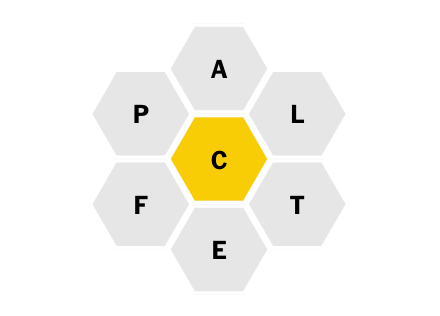

This month, we’re thinking about the ways we plan, use, and relish
our time. Read on for what we’re reading, how we’re managing writing projects and inboxes, and what we do with a few extra minutes on
the train.

Go to Franki's pick


Rachel
editor
I just finished ultrarunner Scott Jurek's latest book, North, (written alongside his wife, Jenny Jurek) which chronicles his journey running the entire 2,200-mile Appalachian Trail northbound. You don’t need to be a runner or an athlete to appreciate this book—you just need to appreciate a good story and derive a sense of joy when people achieve the impossible. It also made me think twice before grumbling about doing a five-mile run. It’s all about perspective.
What we’re reading:

Algorithms of Oppression: How Search Engines Reinforce Racism
A Field Guide to Getting Lost
The Beatles:
The Biography

Alia
director, accounts and strategy
The New York Times’ Spelling Bee is a delightfully addictive game I found during an unexpectedly long commute. After I turned the last page on my book and realized I'd barely moved a mile, I turned to my phone—luckily, this game kept me entertained for the remainder of my trip, and I didn't have total phone-zombie guilt while playing.
Mimi
editor
It's a luxury to be able to do this, but I've started closing my email tab
and checking my email only once an hour on days when I have no pressing deadlines. I would be a huge liar if I said it instantly improved
my focus and stretched my pathetic attention span, but it's a step in
the right direction.
Go to Mimi's pick
Organization is one of the most important skills a writer can have. The heart palpitations that arise when I think I’ve lost notes for a blog article used to be all too familiar to me. Enter the software Scrivener, which has project folders formatted for just about everything you can think of, from manuscripts to nonfiction research reports. It also has handy tools such as character and setting templates and footnote support. Plus, there’s an option to export content in a variety of formats. I’ve used it to write novels, term papers, and everything in between.
Franki
editorial associate
Go to Alia's pick


by Safiya Umoja Noble
by Rebecca Solnit
by Bob Spitz
Go to Rachel's pick


